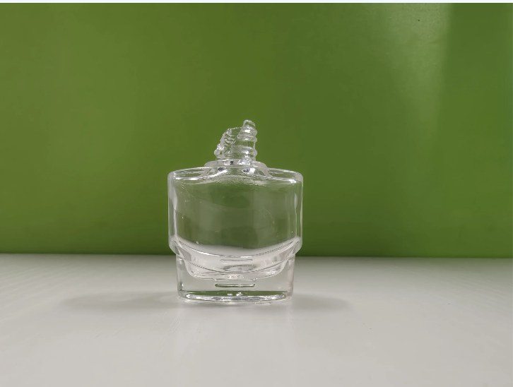

ℹ
本单位尚未配置自有 OSS，文件存放在平台空间（已用 2.8 GB / 10 GB）。配额用满后将无法上传，建议在「组织管理 → 云存储」配置。
团队本单位
24个
今日新增 +0
账号本单位
198个
今日新增 +105院校批量导入
标注项目本单位
80个
已通过 31已标注 1,133 / 4,194
数据集本单位
40个
内置 13自有 27
待办（按影响排序）自动排序
草稿滞留 > 24h7 条
待审核（你是一审）68 条
待验收（你是终审）2 条
加入申请待审批0 条
模型训练排队0 个
原来首页只有"公告 + 快捷入口"，看不出该干什么。v2 把待办按"影响产能的量"排序放在第一屏。
公告
暂无公告 · 单位管理员可在「首页装扮」发布
快捷入口
标注项目数据集成员管理申请审批产能看板
工作台 / 产能看板
产能卡在哪，一眼看清
按环节看停留时长，按人看负载与质量。数据每 5 分钟刷新一次（最近 16:02）。
⚠
瓶颈：审核环节。待审核 68 条，平均停留 31 小时（P90 96 小时），近 7 天增长 42%。建议增加 1 名质检员或启用打回理由模板（可减少 23% 往返）。
待领取
1,279
停留 P50 2.1h
标注中（含草稿 7）
800
停留 P50 6.4h
待审核 ⚠
68
停留 P50 31h · P90 96h
待验收
2
停留 P50 4.8h
已通过
172
交付率 3.9%
交付预测基于近 7 天吞吐
2026-12-05
乐观 11-28中性 12-05悲观 12-18
↗
若审核环节增加 1 人，预计可提前 6 天（至 11-29）。
近 14 天 通过 vs 新增净积压 -28
新增任务通过任务
按人负载点击列头排序
| 成员 | 手中任务 | 今日通过 | 平均打回次数 | 平均质量分 | 草稿滞留 | 状态 |
|---|---|---|---|---|---|---|
| 刘成龙 | 47 | 31 | 0.4 | 92 | 2 | 负载偏高 |
| 小王 | 12 | 4 | 1.8 | 71 | 5 | 草稿滞留 |
| 李四 | 5 | 9 | 0.3 | 95 | 0 | 健康 |
| 张三 | 40 | 2 | 0.9 | 83 | 0 | 可接单 |
这是 v2 新增页面：把原本散落在 6 个页面的数字，收敛成"瓶颈 + ETA + 按人负载"三件事。数据来自 /api/projects/{id}/workflow/stats 聚合。
数据生产 / 标注项目
标注项目
个人空间与团队空间统一入口 · 项目角色在项目内分配
项目总数本团队
47个
团队空间 47个人 0未发布 2
项目类型本团队
2类
生产模式 41院校实训 6
交付率本团队
3.9%
已通过 31在途 23待领取 1,279
存储空间本单位
2.8GB / 10 GB
28.3% · 未配置自有 OSS
共 47 个项目 · 每页 30 条
◫
玻璃缺陷检测 Project #32
0%通过率已发布
待领取 22标注中 7草稿 2
待审核 1待验收 0已通过 0
刘
刘成龙 · 2026-11-14 13:5030 条任务◫
玻璃瓶缺陷 Project #31
100%通过率已发布
待领取 0标注中 0草稿 0
待审核 0待验收 0已通过 30
刘
刘成龙 · 2026-11-14 10:4630 条任务◫
回复选择
0%通过率未发布
待领取 210标注中 6草稿 0
待审核 0待验收 0已通过 0
刘
刘成龙 · 2026-11-09 15:16216 条任务◫
玻璃缺陷检测 Project #32（点我进工作台）
0%通过率含草稿滞留
提示：卡片 hover 才展开完整六态（v2 紧凑化）
刘
刘成龙点击进入 →改造点：① 统计卡加 scope chip；② 进度条改三段式并写"通过率"；③ 卡片增「草稿」计数（v2 新状态）；④ 六态在 hover 浮层展开，默认 3 行紧凑。
数据生产 / 标注项目 / 项目工作台
任务管理器
当前身份：项目标注员 · 刘成龙 · 点行进入作业页；领取后任务进入「进行中」
✓ 1 角色设置
✓ 2 设置
3 奖励
4 项目发布
任务管理器
当前身份
生产模式 · 一个任务只由一名标注员独立完成
⚠
你有 2 条草稿超过 24 小时未提交（任务 10218、10223）。草稿不会进入审核，请尽快提交。
| 缩略图 | 任务 ID | 变更时间 | 标注员 | 标注状态 | 审核状态 | 验收状态 | |
|---|---|---|---|---|---|---|---|
| 10218 | 2026-11-14 13:52 | 刘成龙 | 草稿滞留 25h | — | — | ||
| 10219 | 2026-11-14 13:52 | — | 未标注 | — | — | ||
| 10220 | 2026-11-14 13:52 | — | 未标注 | — | — | ||
| 10221 | 2026-11-14 13:52 | 刘成龙 | 标注中 | — | — | ||
| 10222 | 2026-11-14 13:52 | 刘成龙 | 已提交 | 待审核 | — | ||
| 10223 | 2026-11-14 13:52 | 刘成龙 | 草稿滞留 26h | — | — | ||
| 10224 | 2026-11-14 13:52 | 刘成龙 | 已打回 · 类别错 | 打回 1 次 | — | ||
| 10225 | 2026-11-14 13:52 | 刘成龙 | 已通过 | 已通过 | 已通过 92 分 |
改造点：① 状态列统一 StatusPill 色板；② 新增「草稿」tab 与滞留黄条；③ 打回显示原因分类（"类别错"）与次数；④ 验收显示质量分。
项目 / 玻璃缺陷检测 Project #32 / 标注
标注工作台
任务 #10218 · 标签 defect · 快捷键 1 切标签 Shift+1 适应窗口 Ctrl+滚轮 缩放
1
2
3
4
9 · 10218
10
11
12
13
14

defect
↖✥⊕▭✎⊹
1defect2scratch3bubble
信息
验收
历史
打回 1
上一轮打回
原因分类类别错
说明瓶口划痕被标成了 defect
打回人 / 时间王质检 · 11-13 18:22
本次修改新增 1 区域
区域
▭ defect #1136×96
已标注的区域显示在此，可点选定位、删除。
改造点（不动画布行为）：① 顶部加统一面包屑与「← 任务管理器」；② 「提交」改主色（原为 Label Studio 深靛蓝）；③ 右面板加第 4 页签「打回」显示原因分类 + 叠加对比；④ 标签快捷键条统一 kbd 样式。
标注奖励 / 积分
积分
每一分都来自你终审通过的任务。切换项目可以看清积分来自哪个项目。
当前积分自己
403分
本月新增 403
通过任务数自己
31条
打回 2 次（扣 4 分）
平均质量分自己
92/100
A 档 · 加成 +1/任务
组织内排名本团队
#1
距下一张证书还差 47 分
积分流水点击行展开计分构成（v2 新增）
| 时间 | 项目 | 类型 | 说明 | 积分 |
|---|---|---|---|---|
| 2026-11-14 11:13 | 玻璃瓶缺陷 #31 | 任务获得 | 任务 #10218 终审通过 | +13 |
|
基础分 +10 · 首稿加成 +2（零打回） · 评分加成 +1（质量分 92 → A 档） · 打回扣分 0（打回 0 次） = +13
| ||||
| 2026-11-13 18:22 | 玻璃瓶缺陷 #31 | 打回扣分 | 任务 #10223 一审打回（类别错） | −2 |
| 2026-11-13 16:40 | 视频分类-暴力识别 | 任务获得 | 任务 #10201 终审通过 | +13 |
| 2026-11-12 09:15 | 玻璃瓶缺陷 #31 | 任务获得 | 任务 #10190 终审通过 | +13 |
改造点：① 流水行可展开计分构成（原来只知道 +13，不知道为什么）；② 打回即时扣分（v2 规则变更，消除"先交再改"）；③ 排名卡显示"距下一张证书还差 N 分"。
模型工厂 / 模型超市
把验证过的模型，直接带回你的产线
21 个在架模型，覆盖检测、分割、关键点与多模态。勾选 2–4 个可横向对比（v2 新增）。
在架模型全平台
21个
本周新增 6
累计下载全平台
2.27GB
较上月 +18.4%
认证供应商全平台
14家
覆盖 11 个制造细分
平均 mAP50全平台
67.3%
COCO + 产线私有数据复测
◭
精选货架 · run #15
datasets-fight_finetune · 72 张 · 120 epochs · GPU3
mAP5088.4%
mAP50-9549.6%
参数量 / 体积2.59M · 5.2MB
平台采纳率 新62%
◭
本地训练knife_stick_ft · run #7
knife_stick_ft-merged · 9,237 张 · 120 epochs
mAP5091.9%
mAP50-9562.1%
参数量 / 体积2.59M · 5.2MB
平台采纳率 新54%
◭
外部YOLO11n 官方基线 · 检测
COCO · 118k 张 · 官方权重
mAP5064.2%
mAP50-9541.8%
参数量 / 体积2.6M · 5.4MB
平台采纳率 新—
改造点：① 卡片支持多选 → 顶部「对比已选」；② 卡片新增 平台采纳率（把"模型好不好"从训练指标变成产线证据）；③ 「下架的模型」从按钮改次级入口。
平台运营数据大屏
PLATFORM OPERATIONS · LIVE
2026-11-14 16:02
单位 全平台
8
数据集 67
团队
24
今日 +0
空间
269
数据集 67
项目
95
今日 +2
任务
4,825
今日 +60
成员
198
今日 +105
增长趋势
成员项目任务
11/0811/0911/1011/1111/1211/1311/14
流水线交付
3.9%
交付率
已通过172
审核中68
已打回9
进行中4,157
瓶颈：4,157 条进行中，交付率偏低
改造点：① KPI 加 scope；② 交付率旁给一句话瓶颈结论；③ 与浅色主题共用 token（仅换色板），不再是第三套视觉语言。